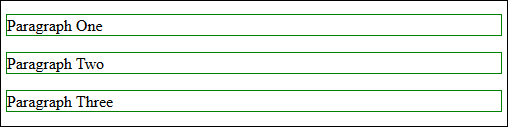
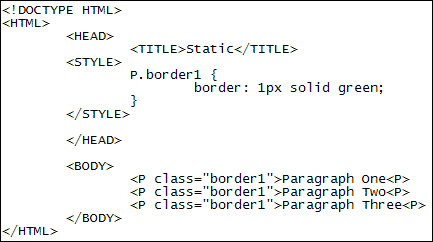
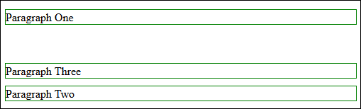
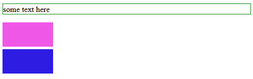
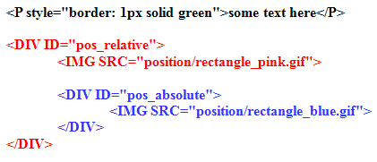
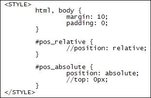
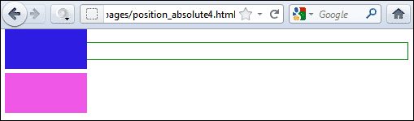
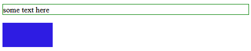
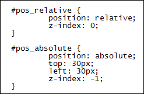
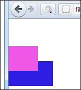

Positioning Elements with CSS
In HTML, elements like paragraphs, images, etc, are stacked one on top of the other, rather like boxes in a warehouse. The image below is taken from a browser, and shows three paragraphs stacked one on top of the other. (We've given each image a border so that you can see them better. Notice that the paragraphs stretch all the way across the page, even though we only have a few words of text in each.)

Here's the HTML and CSS code for the above page:

You can move your elements around the page, however, with something called CSS positioning. The default behaviour is said to be in a Static Position, like the paragraphs above - in other words, they don't move.
But you can move elements out of the normal, Static flow seen above. The first method we'll look at is called Relative positioning.
Relative Positioning
Suppose we want to move paragraph two down the page a little. Like this:

The above effect is done using the CSS instruction position: relative. You then use the properties top, bottom, left, and right. You can use all four at once, or just one, two, or three of them. Here's the CSS code that moves paragraph two down the page:
P.rel {
border: 1px solid green;
position: relative;
top: 70px;
}
And here's the HTML code:
<P class="border1">Paragraph One<P>
<P class="rel">Paragraph Two<P>
<P class="border1">Paragraph Three<P>
So each paragraph has a CSS Class associated with it. The second paragraph has Class="rel". The rel class uses position: relative, followed by the top property with a value of 70 pixels. What this does is to move the paragraph down 70 pixels, but relative to where it was. So it's not 70 pixels down from the top of the browser window. It's 70 pixels down from where you first positioned it: the top position of 0.
Another thing to notice here is that using position relative moves the paragraph
out of its normal flow but leaves a gap where it used to be.
Position Absolute
Another way to position elements on the page is with absolute positioning. You can use position: absolute to place elements anywhere on the page.
Absolute positioning removes an element out of the normal, static flow. Other elements will move up to fill its place. The element you have just removed from the normal flow is now like a free-standing element. (The borders of the removed element shrink to fit the contents. If you want more space you have to specify it with width and height properties.)
Items that are given an absolute position are placed in relation to their parent element. If no parent element exists then the default is the HTML tag. To illustrate what this means, take a look at the image below:

Here, we've placed a paragraph of text at the top, followed by two images, one below the other.Now take a look at the HTML code:

The paragraph of text has an inline style setting its border to green. We then have two sets of DIV tags. The red ones are the outer DIV tags. Think of these as the parent tags. Inside the parent DIV tags are two inner DIV tags, the blue ones. For each set of DIV tags we have an image.
However, if we were to set the blue rectangle to have a top position of 0, what do you think would happen? Where would it move to? Well, take a look at the CSS code with just position: absolute:

The first thing we've done is to set values for the HTML and BODY tags. We've set the margin to 10 pixels and the padding to 0. This is just so that you can see the images more clearly.
For the relative positioning, we've commented out position: relative. You'll see why in a moment. For the absolute position, we've commented out the top value of zero. The question is, if we take out the comments for top: 0px where will the blue rectangle end up? Here's what happens in the browser when we do just that:

The blue rectangle jumps right to the top of the browser window. The reason is does so is that its parent element, the outer DIV, has no position set. In which case, the position: absolute of the inner DIV tags uses the HTML tag as a parent. So the browser window is now top: 0px.
When we take the comments out for position: relative, however, here's what happens:

The top: 0px position is now using the outer DIV as a parent. The blue rectangle can't move up any further than this, so it covers up the pink rectangle - it's placed on top of it.
This is all quite complicated. So just bear in mind that when using absolute positioning, you have to take the parent element into account. If you don't set a parent element that uses the position CSS property then the HTML tag is used.
Fixed Position
The final CSS position is position: fixed. This is similar to position: absolute in that you use it when you want to take an element out of the normal static flow. For example, you could have a side bar on the left of your page using position: fixed. The difference is that the position properties (top, bottom, left, right) take the top left of the browser window as their default starting position. Also, when you scroll down the page the fixed element, the side bar for example, will stay in place. So if you have fixed sidebar in the top left of your page it will stay there when the users scrolls to the bottom of your page.
Z-index
When you use the position properties you also have access to something called the z-index. This is just the stacking order for elements. So you could have images stacked one on top of the other, each one offset a few pixels. Here are our two rectangle images with a z-index set. The pink one is on top, while the blue one is behind it and offset using the top and left properties:
Here's the CSS code that was used:

The default z-index is called auto and has a value of 0. If you want to position something behind an element, you can use a negative number. If you want to position something in front of other element you can use a positive number. If you only have two elements you can just use 0 and -1. In fact, you can miss out the z-index: 0 altogether, as this will be the default position.
Try not to worry too much about z-index - it's rare that you need it.
One final thing about position properties before we move on: you can use negative number for your top, bottom, left and right values. For example, here's our two rectangles moved off the page to the left:

This is done simply by setting a left value with a negative number:
#pos_relative {
position: relative;
left: -50px;
z-index: 0;
}
Exercise
Experiment with negative values for the other position properties to see what
happens.
In the next lesson, you'll see how to use the CSS property float.